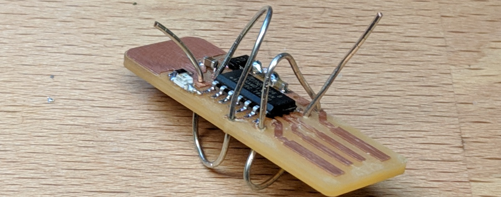

Soldering Vias with Wire
This short guide shows to to connect a PCB's top and bottom copper layers, using some wire and a soldering iron.
A double-sided circuit board will be milled with via holes, however those holes do not have any copper inside them. Professional PCB houses use a technique called electro-plating, which fills those holes with a copper layer.
For DIY boards, the easiest way to connect the top and bottom of a via is to simply loop a wire through and solder both ends.
A common question is:
"can I melt just solder through the hole, and connect both sides without a wire?"
No, that might work temporarily, but if you ever need to re-heat the board (from soldering), then that solder will melt and drip out. A wire is better because it can be held in place.
As an example, here is a double-sided PCB that has been milled and SMD soldered.

To create the first via, strip off the insulation from a solid gauge wire, and loop it through a via.
After it is in the via, pinch the wire so that it creates bends in the wire. These bends are near the PCB, preventing the wire from ever falling out of the hole.
Solder the bent wire to the copper.
Use a good pair of wire cutters to remove the excess wire. A good pair of wire cutters will create a flat, smooth cut.
Do not cut off too much of the wire, however. You want enough wire so that there is still a bend holding it from falling out. If you cut off too much wire, then it might be easy to fall out when re-heated.

The final via should have the wire bent, and soldered at an angle (so it won't fall out in the future).
The blob of cooled solder can be cut with wire cutters as so there are no sharp points.

You can solder your vias one at a time, or you can loop a wire through all the vias at once.
Remember to bend the wires before you solder them, so they cannot fall out after being cut.
When finished, the PCB will have some (not-very-pretty) solder blobs around it.
Now, the PCB's top and bottom copper layers are fully connected.